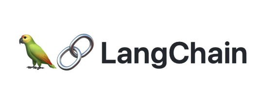
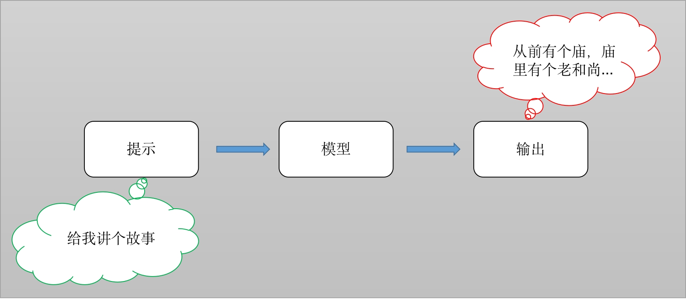
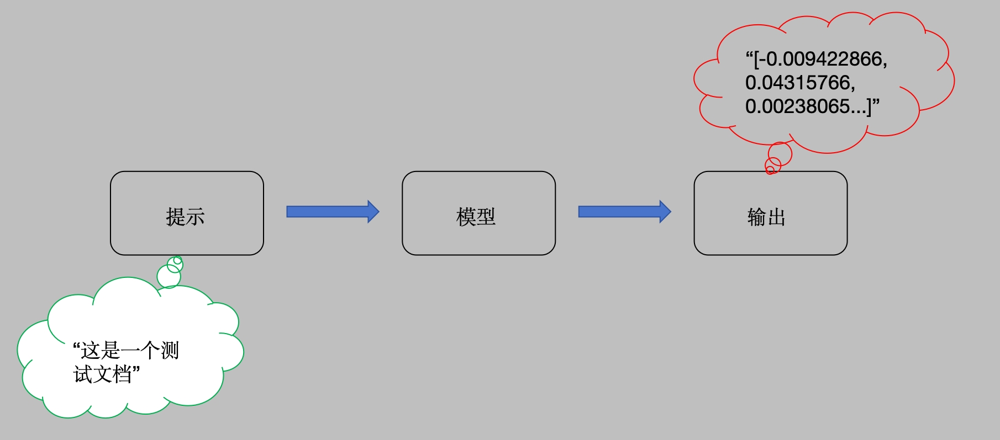
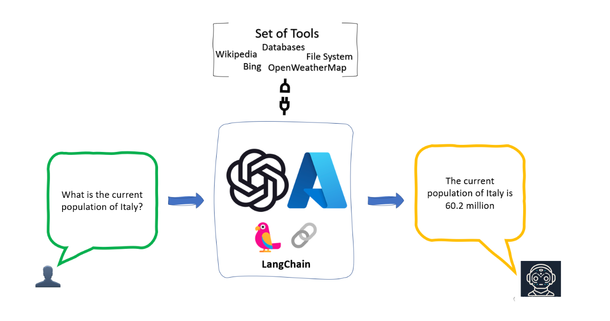

⛓️ LangChain：模型、Prompt、链与 Agent
工程实践提示：示例中的模型地址、数据库账号和密钥均应通过环境变量或独立配置文件注入；部署前还需补充权限控制、输入校验、超时重试、日志脱敏、来源引用与离线评估。
学习目标
- 理解什么是LangChain
- 明确LangChain主要组件的作用
- 了解LangChain常见的使用场景
1 什么是LangChain

LangChain由 Harrison Chase 创建于2022年10月，它是围绕LLMs（大语言模型）建立的一个框架，LLMs使用机器学习算法和海量数据来分析和理解自然语言，GPT3.5、GPT4是LLMs最先进的代表，国内百度的文心一言、阿里的通义千问也属于LLMs。LangChain自身并不开发LLMs，它的核心理念是为各种LLMs实现通用的接口，把LLMs相关的组件“链接”在一起，简化LLMs应用的开发难度，方便开发者快速地开发复杂的LLMs应用。LangChain目前有两个语言的实现：python、nodejs。
本章节将会从两个方面全面介绍LangChain：一个是LangChain组件的基本概念和应用；另一个是LangChain常见的使用场景。
参考官网介绍：https://python.langchain.com/docs/integrations/text_embedding/huggingfacehub
2 LangChain主要组件
一个LangChain的应用是需要多个组件共同实现的，LangChain主要支持6种组件：
- Models：模型，各种类型的模型和模型集成，比如GPT-4
- Prompts：提示，包括提示管理、提示优化和提示序列化
- Memory：记忆，用来保存和模型交互时的上下文状态
- Indexes：索引，用来结构化文档，以便和模型交互
- Chains：链，一系列对各种组件的调用
- Agents：代理，决定模型采取哪些行动，执行并且观察流程，直到完成为止
2.1 Models
现在市面上的模型多如牛毛，各种各样的模型不断出现，LangChain模型组件提供了与各种模型的集成，并为所有模型提供一个精简的统一接口。
LangChain目前支持三种类型的模型：LLMs、Chat Models(聊天模型)、Embeddings Models(嵌入模型）.
- LLMs: 大语言模型接收文本字符作为输入，返回的也是文本字符.
- 聊天模型: 基于LLMs, 不同的是它接收聊天消息(一种特定格式的数据)作为输入，返回的也是聊天消息.
- 文本嵌入模型: 文本嵌入模型接收文本作为输入, 返回的是浮点数列表.
LangChain支持的三类模型，它们的使用场景不同，输入和输出不同，开发者需要根据项目需要选择相应。
2.1.1 LLMs (大语言模型)
LLMs使用场景最多，常用大模型的下载库：https://huggingface.co/models：

接下来我们借助Ollama工具进行模型的使用：
- 第一步：安装必备的工具包
安装langchain库: pip install langchain 安装langchain_community库: pip install langchain_community
- 第二步：代码实现
from langchain_community.llms import Ollama
model = Ollama(model="qwen2:1.5b", temperature=0)
result = model.invoke("请给我讲个鬼故事")
print(result)
##打印结果：
好的，我来给您讲一个鬼故事。很久以前，在一座古老的城堡里，住着一位年轻的公主和她的家人。一天晚上，当他们准备睡觉时，突然听到了一阵奇怪的声音。声音越来越近，最后停在了公主的房间门口。
公主感到非常害怕，但还是决定去看看。她打开门，发现一个穿着破旧衣服、长发披散的女孩站在那里。女孩看起来很虚弱，似乎已经好几天没有进食。公主问她为什么在这里，女孩回答说她迷路了，找不到回家的路。
公主同情这个可怜的女孩，并邀请她进来休息。女孩在公主的床上躺下后，开始讲述她的故事。原来，城堡的主人是一个残忍的统治者，他经常虐待他的臣民。有一天，他发现了一个美丽的年轻女子，便决定将她作为自己的妻子。然而，当女子试图反抗时，她被囚禁在一个地下室里。
女孩说，她一直在寻找回家的路，直到她遇到了公主。她请求公主帮助她找到出路，回到她的家。公主答应了，并开始为她祈祷。最后，奇迹发生了，城堡的主人被愤怒的人民杀死，而女孩也终于回到了自己的家中。
这个故事告诉我们，即使是最强大的统治者也无法忽视善良和同情心的力量。
2.1.2 Chat Models (聊天模型)
聊天消息包含下面几种类型，使用时需要按照约定传入合适的值：
- AIMessage: 就是 AI 输出的消息，可以是针对问题的回答.
- HumanMessage: 人类消息就是用户信息，由人给出的信息发送给LLMs的提示信息，比如“实现一个快速排序方法”.
- SystemMessage: 可以用于指定模型具体所处的环境和背景，如角色扮演等。你可以在这里给出具体的指示，比如“作为一个代码专家”，或者“返回json格式”.
- ChatMessage: Chat 消息可以接受任意角色的参数，但是在大多数时间，我们应该使用上面的三种类型.
LangChain支持的常见聊天模型有：
| 模型 | 描述 |
|---|---|
| ChatOpenAI | OpenAI聊天模型 |
| AzureChatOpenAI | Azure提供的OpenAI聊天模型 |
| PromptLayerChatOpenAI | 基于OpenAI的提示模版平台 |
举例说明：
from langchain_core.messages import HumanMessage, SystemMessage from langchain_community.chat_models import ChatOllama model = ChatOllama(model="qwen2.5:7b", temperature=0) messages = [ SystemMessage(content="现在你是一个著名的歌手"), HumanMessage(content="给我写一首歌词") ] res = model(messages) print(res) print(res.content) # 打印结果： ''' 好的，以下是一首简短的歌词： 在每一个黎明前醒来， 心中充满希望和梦想。 每一次心跳都带着力量， 为了心中的目标，我永不放弃。 在这条漫长的路上， 我学会了坚强和勇敢。 无论前方有多少困难， 我都会坚持到底，直到胜利。 因为我知道， 我的梦想不会被打败， 因为我有勇气去追求， 因为我相信自己能够成功。 '''
2.1.3 提示模板
在上面的例子中，模型默认是返回纯文本结果的，如果想让模型返回想要的数据格式（比如json格式），可以使用提示模版。
提示模板就是把一些常见的提示整理成模板，用户只需要修改模板中特定的词语，就能快速准确地告诉模型自己的需求。我们看个例子：
from langchain_community.chat_models import ChatOllama from langchain.prompts import ChatPromptTemplate # 创建原始模板 template_str = """您是一位专业的鲜花店文案撰写员。\n 对于售价为 {price} 元的 {flower_name} ，您能提供一个吸引人的简短描述吗？ # """ # 根据原始模板创建LangChain提示模板 promp_emplate = ChatPromptTemplate.from_template(template_str) prompt = promp_emplate.format_messages(price='50', flower_name=["玫瑰"], ) print('prompt-->', prompt) # prompt--> [HumanMessage(content="您是一位专业的鲜花店文案撰写员。\n\n对于售价为 50 元的 ['玫瑰'] ，您能提供一个吸引人的简短描述吗？\n# ", additional_kwargs={}, response_metadata={})] # 实例化模型 model = ChatOllama(model="qwen2.5:7b", temperature=0) # 打印结果 result = model.invoke(prompt) print(result.content) #当然可以！"玫瑰，售价 50 元，是爱情与浪漫的象征。每一朵都是精心挑选和包装，确保其完美无瑕。无论是在庆祝特别的日子还是简单的日常问候中，这束玫瑰都能传达你的爱意。现在就为你的爱人或自己选择一份特别的礼物吧！"
2.1.4 Embeddings Models(嵌入模型)
Embeddings Models特点：将字符串作为输入，返回一个浮动数的列表。在NLP中，Embedding的作用就是将数据进行文本向量化。

Embeddings Models可以为文本创建向量映射，这样就能在向量空间里去考虑文本，执行诸如语义搜索之类的操作，比如说寻找相似的文本片段。
接下来我们以一个qwen文本嵌入模型的例子进行说明：
from langchain_community.embeddings import OllamaEmbeddings model = OllamaEmbeddings(model="mxbai-embed-large", temperature=0) res1 = model.embed_query('这是第一个测试文档') print(res1) res2 = model.embed_documents(['这是第一个测试文档', '这是第二个测试文档']) print(res2)
上述代码中，我们分别使用了两种方法来进行文本的向量表示，他们最大不同在于：embed_query()接收一个字符串的输入，而embed_documents可以接收一组字符串。
LangChain集成的文本嵌入模型有：
- AzureOpenAI、Baidu Qianfan、Hugging Face Hub、OpenAI、Llama-cpp、SentenceTransformers
2.2 Prompts
Prompt是指当用户输入信息给模型时加入的提示，这个提示的形式可以是zero-shot或者few-shot等方式，目的是让模型理解更为复杂的业务场景以便更好的解决问题。
提示模板：如果你有了一个起作用的提示，你可能想把它作为一个模板用于解决其他问题，LangChain就提供了PromptTemplates组件，它可以帮助你更方便的构建提示。
zero-shot提示方式：
from langchain import PromptTemplate from langchain_community.llms import Ollama model = Ollama(model="qwen2.5:7b") # 定义模板 template = "我的邻居姓{lastname}，他生了个儿子，给他儿子起个名字" prompt = PromptTemplate( input_variables=["lastname"], template=template, ) prompt_text = prompt.format(lastname="王") print(prompt_text) # result: 我的邻居姓王，他生了个儿子，给他儿子起个名字 result = model(prompt_text) print(result) ''' 如果您的邻居想要给他的儿子起一个名字，可以考虑以下建议： 1. **个性化选择**：根据孩子的性别、年龄或者其他个人喜好来命名。 2. **传统或流行的名字**：可以从传统文化中寻找灵感，或者参考当前比较流行的男孩名字。例如，如果孩子是男孩，可以选择“宇航”、“浩然”、“启明”等富有寓意的汉字作为名字。 3. **结合家族背景和姓氏**：如果您想保持与邻居的关系，可以考虑使用他的姓氏作为孩子的名字的一部分，如“王宇航”、“王浩然”。 4. **简单易读的名字**：避免过于复杂的或拗口的名字，以便于孩子成长过程中的发音。 请记住，无论选择哪种方式命名，重要的是要考虑到孩子的性格特点和未来发展。 '''
few-shot提示方式：
from langchain import PromptTemplate, FewShotPromptTemplate from langchain_community.llms import Ollama model = Ollama(model="qwen2.5:7b") examples = [ {"word": "开心", "antonym": "难过"}, {"word": "高", "antonym": "矮"}, ] example_template = """ 单词: {word} 反义词: {antonym}\\n """ example_prompt = PromptTemplate( input_variables=["word", "antonym"], template=example_template, ) few_shot_prompt = FewShotPromptTemplate( examples=examples, example_prompt=example_prompt, prefix="给出每个单词的反义词", suffix="单词: {input}\\n反义词:", input_variables=["input"], example_separator="\\n", ) prompt_text = few_shot_prompt.format(input="粗") print(prompt_text) print('*'*80) # 给出每个单词的反义词 # 单词: 开心 # 反义词: 难过 # 单词: 高 # 反义词: 矮 # 单词: 粗 # 反义词: # 调用模型 print(model(prompt_text)) # 细
2.3 Chains(链)
在LangChain中，Chains描述了将LLM与其他组件结合起来完成一个应用程序的过程.
针对上一小节的提示模版例子，zero-shot里面，我们可以用链来连接提示模版组件和模型，进而可以实现代码的更改：
from langchain import PromptTemplate from langchain_community.llms import Ollama from langchain.chains import LLMChain # 定义模板 template = "我的邻居姓{lastname}，他生了个儿子，给他儿子起个名字" prompt = PromptTemplate( input_variables=["lastname"], template=template, ) llm = Ollama(model="qwen2.5:7b") chain = LLMChain(llm = llm, prompt = prompt) # 执行链 print(chain.run("王"))
如果你想将第一个模型输出的结果，直接作为第二个模型的输入，还可以使用LangChain的SimpleSequentialChain, 代码如下：
from langchain import PromptTemplate from langchain_community.llms import Ollama from langchain.chains import LLMChain, SimpleSequentialChain # 创建第一条链 template = "我的邻居姓{lastname}，他生了个儿子，给他儿子起个名字" first_prompt = PromptTemplate( input_variables=["lastname"], template=template, ) llm = Ollama(model="qwen2.5:7b") first_chain = LLMChain(llm = llm, prompt = first_prompt) # 创建第二条链 second_prompt = PromptTemplate( input_variables=["child_name"], template="邻居的儿子名字叫{child_name}，给他起一个小名", ) second_chain = LLMChain(llm=llm, prompt=second_prompt) # 链接两条链 overall_chain = SimpleSequentialChain(chains=[first_chain, second_chain], verbose=True) print(overall_chain) print('*'*80) # 执行链，只需要传入第一个参数 catchphrase = overall_chain.run("王") print(catchphrase)
2.4 Agents (代理)
Agents 也就是代理，它的核心思想是利用一个语言模型来选择一系列要执行的动作。
在 LangChain 中 Agents 的作用就是根据用户的需求，来访问一些第三方工具(比如：搜索引擎或者数据库)，进而来解决相关需求问题。
为什么要借助第三方库？
- 因为大模型虽然非常强大，但是也具备一定的局限性，比如不能回答实时信息、处理数学逻辑问题仍然非常的初级等等。因此，可以借助第三方工具来辅助大模型的应用。

几个重要的概念：
- Agent代理：
- 制定计划和思考下一步需要采取的行动。
- 负责控制整段代码的逻辑和执行，代理暴露了一个接口，用来接收用户输入。
- LangChain 提供了不同类型的代理（以其中三种举例）:
- zero-shot-react-description: 利用 ReAct 框架根据工具的描述来决定使用哪个工具，可以使用多个工具，但需要为每个工具提供描述信息。工具的选择单纯依靠工具的描述信息。
- structured-chat-zero-shot-react-description：相较于单一字符串作为输入的代理，该类型的代理可以通过工具的参数schema创建结构化的动作输入。
- conversational-react-description：这类代理专为对话场景设计，使用具有对话性的提示词，利用 ReAct 框架选择工具，并利用记忆功能来保存对话历史。
- Tool工具：
- 解决问题的工具
- 第三方服务的集成，例如计算、网络(谷歌、bing)、代码执行等等
现在我们实现一个使用代理的例子：假设我们想 """解以下方程：3x + 4(x + 2) - 84 = y; 其中x为3，请问y是多少？"""？我们可以使用代理工具，让Agents选择执行。代码如下：
import os from langchain.agents import load_tools from langchain.agents import initialize_agent from langchain.agents import AgentType from langchain_community.llms import Ollama # 实例化大模型 llm = Ollama(model="qwen2.5:7b") # 设置工具 # "serpapi"实时联网搜素工具、"math": 数学计算的工具 # tools = load_tools(["serpapi", "llm-math"], llm=llm) tools = load_tools(["llm-math"], llm=llm) # 实例化代理Agent:返回 AgentExecutor 类型的实例 agent = initialize_agent(tools, llm, agent=AgentType.ZERO_SHOT_REACT_DESCRIPTION, verbose=True) print('agent', agent) # 准备提示词 from langchain_core.prompts import PromptTemplate prompt_template = """解以下方程：3x + 4(x + 2) - 84 = y; 其中x为3，请问y是多少？""" prompt = PromptTemplate.from_template(prompt_template) print('prompt-->', prompt) # 代理Agent工作 result = agent.run(prompt) print(result)
注意，如果运行这个示例你要使用serpapi， 需要申请
serpapitoken，并且设置到环境变量SERPAPI_API_KEY，然后安装依赖包google-search-results
查询所有工具的名称
from langchain.agents import get_all_tool_names results = get_all_tool_names() print(results) # ['python_repl', 'requests', 'requests_get', 'requests_post', 'requests_patch', 'requests_put', 'requests_delete', 'terminal', 'sleep', 'wolfram-alpha', 'google-search', 'google-search-results-json', 'searx-search-results-json', 'bing-search', 'metaphor-search', 'ddg-search', 'google-serper', 'google-scholar', 'google-serper-results-json', 'searchapi', 'searchapi-results-json', 'serpapi', 'dalle-image-generator', 'twilio', 'searx-search', 'wikipedia', 'arxiv', 'golden-query', 'pubmed', 'human', 'awslambda', 'sceneXplain', 'graphql', 'openweathermap-api', 'dataforseo-api-search', 'dataforseo-api-search-json', 'eleven_labs_text2speech', 'google_cloud_texttospeech', 'news-api', 'tmdb-api', 'podcast-api', 'memorize', 'llm-math', 'open-meteo-api']
LangChain支持的工具如下：
| 工具 | 描述 |
|---|---|
| Bing Search | Bing搜索 |
| Google Search | Google搜索 |
| Google Serper API | 一个从google搜索提取数据的API |
| Python REPL | 执行python代码 |
| Requests | 执行python代码 |
2.5 Memory
大模型本身不具备上下文的概念，它并不保存上次交互的内容，ChatGPT之所以能够和人正常沟通对话，因为它进行了一层封装，将历史记录回传给了模型。
因此 LangChain 也提供了Memory组件, Memory分为两种类型：短期记忆和长期记忆。短期记忆一般指单一会话时传递数据，长期记忆则是处理多个会话时获取和更新信息。
目前的Memory组件只需要考虑ChatMessageHistory。举例分析：
from langchain.memory import ChatMessageHistory history = ChatMessageHistory() history.add_user_message("在吗？") history.add_ai_message("有什么事?") print(history.messages) #打印结果： ''' [HumanMessage(content='在吗？'), AIMessage(content='有什么事?')] '''
和 Qianfan结合，直接使用ConversationChain：
from langchain import ConversationChain from langchain_community.llms import Ollama # 实例化大模型 llm = Ollama(model="qwen2.5:7b") conversation = ConversationChain(llm=llm) resut1 = conversation.predict(input="小明有1只猫") print(resut1) print('*'*80) resut2 = conversation.predict(input="小刚有2只狗") print(resut2) print('*'*80) resut3 = conversation.predict(input="小明和小刚一共有几只宠物?") print(resut3) print('*'*80) # 打印结果： ''' 小明有一只猫，那这只猫叫什么名字呢？或者你想要告诉我一些关于小明和他猫咪的故事吗？ ******************************************************************************** 小刚家有两只狗，那这两位忠诚的小伙伴叫什么呢？还是说你可以分享一下小刚和他的狗狗们的趣事吗？比如他们一起做了些什么有趣的事情呢？ ******************************************************************************** 小明和小刚总共有3只宠物。小明有1只猫，小刚有2只狗。如果你愿意分享更多关于他们的故事或想知道一些有趣的事情，请随时告诉我！ ******************************************************************************** '''
如果要像chatGPT一样，长期保存历史消息，，可以使用messages_to_dict 方法
from langchain.memory import ChatMessageHistory from langchain.schema import messages_from_dict, messages_to_dict history = ChatMessageHistory() history.add_user_message("hi!") history.add_ai_message("whats up?") dicts = messages_to_dict(history.messages) print(dicts) ''' [{'type': 'human', 'data': {'content': 'hi!', 'additional_kwargs': {}, 'type': 'human', 'example': False}}, {'type': 'ai', 'data': {'content': 'whats up?', 'additional_kwargs': {}, 'type': 'ai', 'example': False}}] ''' # 读取历史消息 new_messages = messages_from_dict(dicts) print(new_messages) #[HumanMessage(content='hi!'), AIMessage(content='whats up?')]
2.6 Indexes (索引)
Indexes组件的目的是让LangChain具备处理文档处理的能力，包括：文档加载、检索等。注意，这里的文档不局限于txt、pdf等文本类内容，还涵盖email、区块链、视频等内容。
Indexes组件主要包含类型：
- 文档加载器
- 文本分割器
- VectorStores
- 检索器
2.6.1 文档加载器
文档加载器主要基于Unstructured 包，Unstructured 是一个python包，可以把各种类型的文件转换成文本。
文档加载器使用起来很简单，只需要引入相应的loader工具：
from langchain_community.document_loaders import UnstructuredFileLoader loader = UnstructuredFileLoader('衣服属性.txt', encoding='utf8') docs = loader.load() print(docs) print(len(docs)) first_01 = docs[0].page_content[:4] print(first_01) print('*'*80) from langchain_community.document_loaders import TextLoader loader = TextLoader('衣服属性.txt', encoding='utf8') docs = loader.load() print(docs) print(len(docs)) first_01 = docs[0].page_content[:4] print(first_01) # 打印结果： ''' [Document(page_content='身高：160-170cm， 体重：90-115斤，建议尺码M。\n身高：165-175cm， 体重：115-135斤，建议尺码L。\n身高：170-178cm， 体重：130-150斤，建议尺码XL。\n身高：175-182cm， 体重：145-165斤，建议尺码2XL。\n身高：178-185cm， 体重：160-180斤，建议尺码3XL。\n身高：180-190cm， 体重：180-210斤，建议尺码4XL。\n面料分类：其他\n图案：纯色\n领型：翻领\n衣门襟：单排扣\n颜色：黑色 卡其色 粉色 杏色\n袖型：收口袖\n适用季节：冬季\n袖长：长袖\n厚薄：厚款\n适用场景：其他休闲\n衣长：常规款\n版型：宽松型\n款式细节：假两件\n工艺处理：免烫处理\n适用对象：青年\n面料功能：保暖\n穿搭方式：外穿\n销售渠道类型：纯电商(只在线上销售)\n材质成分：棉100%', metadata={'source': '衣服属性.txt'})] 1 身高：1 ******************************************************************************** [Document(page_content='身高：160-170cm， 体重：90-115斤，建议尺码M。\n\n身高：165-175cm， 体重：115-135斤，建议尺码L。\n\n身高：170-178cm， 体重：130-150斤，建议尺码XL。\n\n身高：175-182cm， 体重：145-165斤，建议尺码2XL。\n\n身高：178-185cm， 体重：160-180斤，建议尺码3XL。\n\n身高：180-190cm， 体重：180-210斤，建议尺码4XL。\n\n面料分类：其他\n\n图案：纯色\n\n领型：翻领\n\n衣门襟：单排扣\n\n颜色：黑色 卡其色 粉色 杏色\n\n袖型：收口袖\n\n适用季节：冬季\n\n袖长：长袖\n\n厚薄：厚款\n\n适用场景：其他休闲\n\n衣长：常规款\n\n版型：宽松型\n\n款式细节：假两件\n\n工艺处理：免烫处理\n\n适用对象：青年\n\n面料功能：保暖\n\n穿搭方式：外穿\n\n销售渠道类型：纯电商(只在线上销售)\n\n材质成分：棉100%', metadata={'source': '衣服属性.txt'})] 1 身高：1 '''
LangChain支持的文档加载器 (部分)：
| 文档加载器 | 描述 |
|---|---|
| CSV | CSV问价 |
| JSON Files | 加载JSON文件 |
| Jupyter Notebook | 加载notebook文件 |
| Markdown | 加载markdown文件 |
| Microsoft PowerPoint | 加载ppt文件 |
| 加载pdf文件 | |
| Images | 加载图片 |
| File Directory | 加载目录下所有文件 |
| HTML | 网页 |
2.6.2 文档分割器
由于模型对输入的字符长度有限制，我们在碰到很长的文本时，需要把文本分割成多个小的文本片段。
文本分割最简单的方式是按照字符长度进行分割，但是这会带来很多问题，比如说如果文本是一段代码，一个函数被分割到两段之后就成了没有意义的字符，所以整体的原则是把语义相关的文本片段放在一起。
LangChain中最基本的文本分割器是CharacterTextSplitter ，它按照指定的分隔符（默认“\n\n”）进行分割，并且考虑文本片段的最大长度。我们看个例子：
from langchain.text_splitter import CharacterTextSplitter text_splitter = CharacterTextSplitter( separator = " ", # 空格分割，但是空格也属于字符 chunk_size = 5, chunk_overlap = 0, ) # 一句分割 a = text_splitter.split_text("a b c d e f") print(a) # ['a b c', 'd e f'] # 多句话分割（文档分割） texts = text_splitter.create_documents(["a b c d e f", "e f g h"], ) print(texts) # [Document(page_content='a b c'), Document(page_content='d e f'), Document(page_content='e f g'), Document(page_content='h')]
除了CharacterTextSplitter分割器，LangChain还支持其他文档分割器 (部分)：
| 文档加载器 | 描述 |
|---|---|
| LatexTextSplitter | 沿着Latex标题、标题、枚举等分割文本。 |
| MarkdownTextSplitter | 沿着Markdown的标题、代码块或水平规则来分割文本。 |
| TokenTextSplitter | 根据openAI的token数进行分割 |
| PythonCodeTextSplitter | 沿着Python类和方法的定义分割文本。 |
2.6.3 VectorStores
VectorStores是一种特殊类型的数据库，它的作用是存储由嵌入创建的向量，提供相似查询等功能。我们使用其中一个Chroma 组件pip install chromadb作为例子：
from langchain_community.embeddings import OllamaEmbeddings from langchain.text_splitter import CharacterTextSplitter from langchain_community.vectorstores import Chroma # pku.txt内容：<https://www.pku.edu.cn/about.html> with open('./pku.txt') as f: state_of_the_union = f.read() text_splitter = CharacterTextSplitter(chunk_size=100, chunk_overlap=0) texts = text_splitter.split_text(state_of_the_union) print(texts) embeddings = OllamaEmbeddings(model="mxbai-embed-large") docsearch = Chroma.from_texts(texts, embeddings) query = "1937年北京大学发生了什么？" docs = docsearch.similarity_search(query) print(docs) ''' [Document(metadata={}, page_content='1937年卢沟桥事变后，北京大学与清华大学、南开大学南迁长沙，共同组成国立长沙临时大学。1938年，临时大学又西迁昆明，更名为国立西南联合大学。抗日战争胜利后，北京大学于1946年10月在北平复员。'), Document(metadata={}, page_content='1917年，著名教育家蔡元培就任北京大学校长，他“循思想自由原则，取兼容并包主义”，对北京大学进行了卓有成效的改革，促进了思想解放和学术繁荣。陈独秀、李大钊、毛泽东以及鲁迅、胡适、李四光等一批杰出人士都曾在北京大学任教或任职。'), Document(metadata={}, page_content='北京大学创办于1898年，是戊戌变法的产物，也是中华民族救亡图存、兴学图强的结果，初名京师大学堂，是中国近现代第一所国立综合性大学，辛亥革命后，于1912年改为现名。'), Document(metadata={}, page_content='在悠久的文明历程中，古代中国曾创立太学、国子学、国子监等国家最高学府，在中国和世界教育史上具有重要影响。北京大学“上承太学正统，下立大学祖庭”，既是中华文脉和教育传统的传承者，也标志着中国现代高等教育的开端。其创办之初也是国家最高教育行政机关，对建立中国现代学制作出重要历史贡献。')] '''
LangChain支持的VectorStore如下：
| VectorStore | 描述 |
|---|---|
| Chroma | 一个开源嵌入式数据库 |
| ElasticSearch | ElasticSearch |
| Milvus | 用于存储、索引和管理由深度神经网络和其他机器学习（ML）模型产生的大量嵌入向量的数据库 |
| Redis | 基于redis的检索器 |
| FAISS | Facebook AI相似性搜索服务 |
| Pinecone | 一个具有广泛功能的向量数据库 |
2.6.4 检索器
检索器是一种便于模型查询的存储数据的方式，LangChain约定检索器组件至少有一个方法get_relevant_texts，这个方法接收查询字符串，返回一组文档。
from langchain.document_loaders import TextLoader from langchain.text_splitter import CharacterTextSplitter from langchain_community.vectorstores import FAISS from langchain_community.embeddings import OllamaEmbeddings loader = TextLoader('./pku.txt') documents = loader.load() text_splitter = CharacterTextSplitter(chunk_size=100, chunk_overlap=0) texts = text_splitter.split_documents(documents) embeddings = OllamaEmbeddings(model="mxbai-embed-large") db = FAISS.from_documents(texts, embeddings) retriever = db.as_retriever(search_kwargs={'k': 1}) docs = retriever.get_relevant_documents("北京大学什么时候成立的") print(docs) #打印结果： ''' [Document(metadata={'source': './pku.txt'}, page_content='北京大学创办于1898年，是戊戌变法的产物，也是中华民族救亡图存、兴学图强的结果，初名京师大学堂，是中国近现代第一所国立综合性大学，辛亥革命后，于1912年改为现名。')] '''
LangChain支持的检索器组件如下：
| 检索器 | 介绍 |
|---|---|
| Azure Cognitive Search Retriever | Amazon ACS检索服务 |
| ChatGPT Plugin Retriever | ChatGPT检索插件 |
| Databerry | Databerry检索 |
| ElasticSearch BM25 | ElasticSearch检索器 |
| Metal | Metal检索器 |
| Pinecone Hybrid Search | Pinecone检索服务 |
| SVM Retriever | SVM检索器 |
| TF-IDF Retriever | TF-IDF检索器 |
| VectorStore Retriever | VectorStore检索器 |
| Vespa retriever | 一个支持结构化文本和向量搜索的平台 |
| Weaviate Hybrid Search | 一个开源的向量搜索引擎 |
| Wikipedia | 支持wikipedia内容检索 |
3 LangChain使用场景
- 个人助手
- 基于文档的问答系统
- 聊天机器人
- Tabular数据查询
- API交互
- 信息提取
- 文档总结
4 本章小结
本章节主要对LangChain框架基础知识进行了介绍，让我们对LangChain有了一个初步认识，了解了LangChain的使用场景。